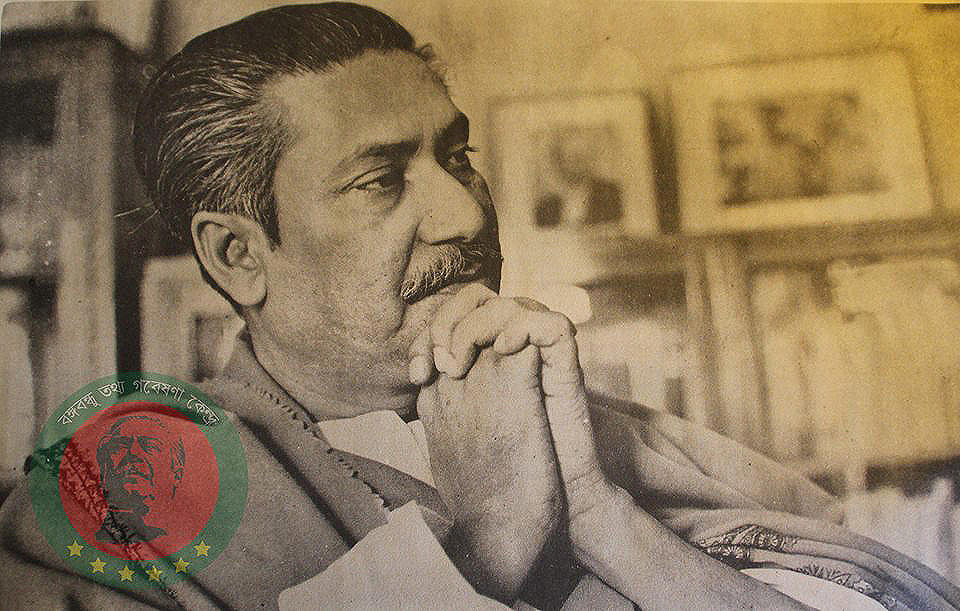

জাতির জনক বঙ্গবন্ধু শেখ মুজিবুর রহমান ফরিদপুর জেলার গোপালগঞ্জ মহকুমার (বর্তমানে জেলা) টুঙ্গিপাড়া গ্রামে এক সম্ভ্রান্ত মুসলিম পরিবারে ১৯২০ সালের ১৭ মার্চ জন্মগ্রহণ করেন। শেখ লুৎফর রহমান ও মোসাম্মৎ সাহারা খাতুনের চার কন্যা ও দুই পুত্রের মধ্যে তৃতীয় সন্তান শেখ মুজিব। বাবা-মা ডাকতেন খোকা বলে। খোকার শৈশবকাল কাটে টুঙ্গি-পাড়ায়।

স্কুল জীবন থেকেই মুজিবের মধ্যে নেতৃত্বের গুণাবলীর বিকাশ ঘটে। তিনি যখন গোপালগঞ্জ মিশনারী স্কুলের ছাত্র সে সময় একবার বাংলার মুখ্যমন্ত্রী এ.কে ফজলুল হক ঐ স্কুল পরিদর্শনে আসেন (১৯৩৯)। শোনা যায়, ঐ অঞ্চলের অনুন্নত অবস্থার প্রতি মুখ্যমন্ত্রীর দৃষ্টি আকর্ষণের জন্য তরুণ মুজিব বিক্ষোভ সংগঠিত করেন। ম্যাট্রিক পাশের পর মুজিব কলকাতায় গিয়ে ইসলামিয়া কলেজে ভর্তি হন। সেখান থেকেই তিনি আই.এ ও বি.এ পাশ করেন। ১৯৪৬ সালে তিনি ইসলামিয়া কলেজ ছাত্র-সংসদের সাধারণ সম্পাদক নির্বাচিত হন। তিনি বঙ্গীয় প্রাদেশিক মুসলিম লীগের একজন সক্রিয় কর্মী এবং ১৯৪৩ সাল থেকে নিখিল ভারত মুসলিম লীগ কাউন্সিলের সদস্য ছিলেন। রাজনীতিতে তিনি ছিলেন এইচ. এস সোহরাওয়ার্দীর একজন একনিষ্ঠ অনুসারী। ১৯৪৬ সালের সাধারণ নির্বাচনে মুসলিম লীগ শেখ মুজিবকে ফরিদপুর জেলায় দলীয় প্রার্থীদের পক্ষে নির্বাচনী প্রচারণার দায়িত্ব অপর্ণ করে।